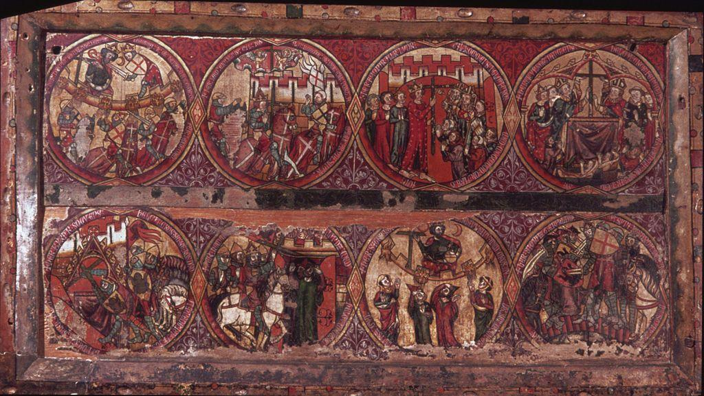

Levant Before the Crusades.
The Levant prior to the Crusades was ruled by the Seljuk Turks. Under the rulership of the Turks, religious freedom was exercised and Jewish and Christian communities were allowed to the live in the empire given they pay extra taxes. When the Turks began to push into Anatolia and drive back the Byzantines, first Crusade was triggered to begin.
Levant During the Crusades
The Crusades were ... a and caused , "200 years of troubled occupation of the region" (Cleveland 34).
Levant After the Crusades
Eventually the Mamluluk Sultante drove out the crusaders and, "the Europeans were ejected from the eastern Mediterranean" (Cleveland 34).